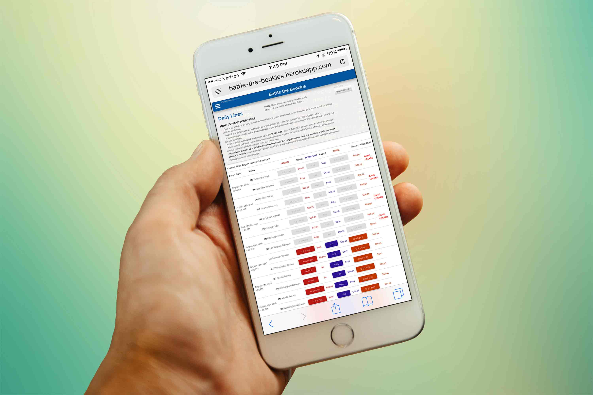
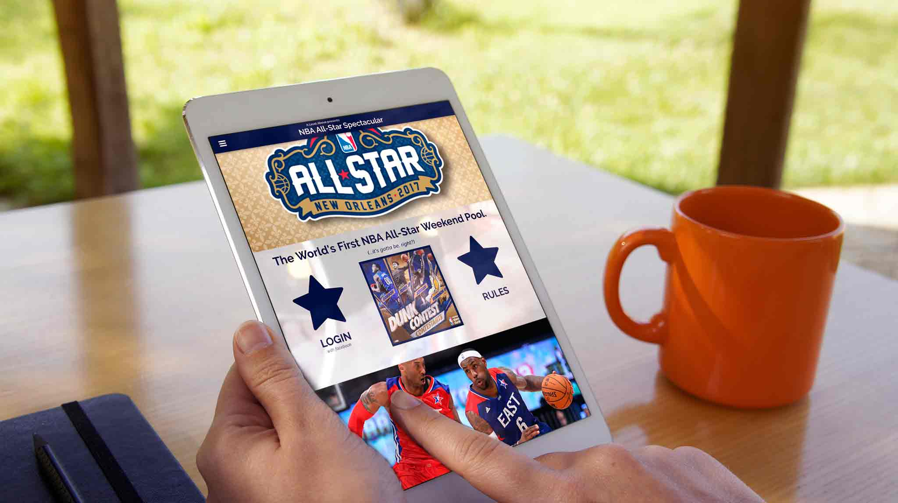

ALA Survivor Series
A NEW, BETTER WAY TO PLAY.
https://www.alasurvivorseries.com/
I’ve spent much of my adult life running NFL Survivor Pools, and I’ve always found the offerings from the major service providers (ESPN.com, CBSSports.com, and Yahoo) to be lacking in terms of features and functionality. With the ALA Survivor Series, I used React + Redux with a Node backend and PostgreSQL to create a product that not only makes the Survivor format adaptable to any sport — but also adds a smorgasbord of features and enhancements that -- to my knowledge -- exist nowhere else. Integration with the professional sports leagues’ APIs allows for ‘live scoring,’ which reports results and statistics all the way down to the box score-level and updates the game scoreboard in real-time. An optional ‘Bonus Pool’ adds an additional layer to the game, and automatically awards prizes to entrants if their weekly selections achieve specific player- and team-performance bonuses; those prizes and payouts are retrievable in a flexible and customizable reporting tool. A filterable news feed broadcasts notable pool events and updates on each pool’s homepage. A variety of other useful features and bits of pool reporting — such as an at-a-glance breakdown of the pool’s selections each week — are also included, and I’m continually adding new features. All in all, the ALA Survivor Series is emblematic of what I love about being a developer and the ability to create anything I can dream up.

Battle the Bookies
THINK YOU CAN BEAT VEGAS?
http://www.alabattlethebookies.com
Battle the Bookies is the live, web-based evolution of an A Level Above game that requires each entrant to make a theoretical bet on every game of the NFL season. By making calls to a sports odds API at near-constant intervals, the app updates the odds for each game in live fashion, which added a new element to the game -- one not possible in its original static-line/Excel incarnation -- allowing entrants to strategically time their picks based on how they anticipate real-life odds might move. New features added to the site during the 2016 NFL season included CapperRankings — an algorithm-driven measurement of a pick’s value based on the best number ever available for that selection — and chronological selection graphs, which charted picks based on time value relative to the rest of the pool’s selections for each game. The app also features daily and year-to-date standings and results, complete selection histories for each entrant, and user analytics which detail each entrant's pick tendencies over the course of the season. Battle the Bookies was built with the MEAN stack (MongoDB, Express.js, AngularJS, and Node.js) and incorporates Materialize for styling, JSON Web Tokens for authentication, and ZingCharts.

NBA All-Star Spectacular
THE WORLD'S FIRST NBA ALL-STAR WEEKEND POOL.
https://nba-all-star-spectacular.herokuapp.com/
The NBA All-Star Spectacular was built in just over a week's time and is the second original offering to be added to A Level Above's stable of games. In the dark days following the conclusion of football season -- when there are precious few betting opportunities across the sports landscape -- this relatively simple game allows users to compete with each other by making theoretical bets on the Vegas lines for the various NBA All-Star Weekend events. Though the game is similar in spirit to Battle the Bookies, the app's front-end architecture differs a great deal in structure and utilizes jQuery for user interactions and Pug/Jade for HTML templating. The backend was built with Node, Express, and a PostgreSQL database. Facebook OAuth is used for authentication.
Nervous Donut
SHORT & SWEET CREATIVE WRITING INSPIRATION.
https://nervous-donut.herokuapp.com
NervousDonut is a fun, simple exercise in creative writing and was the result of our Q2 Group Project at Galvanize. Once users have signed up, they are able to begin writing stories based on three random images generated by the Unsplash API. Upon completion, user entries are then saved to a database and posted to the Stories page for all the world to see, and visitors to the site can rate other users' writing through 'likes.' Within the Stories page are sections for both the top-rated and most recently-generated stories. Nervous Donut was built with a Node/Express backend, PostgreSQL for database support, Google OAuth for authentication, jQuery, and Pug/Jade for server-side templating.
TennisTally
ONE-TOUCH TENNIS STAT TRACKING.
https://tennis-tally.herokuapp.com
TennisTally was my first project at Galvanize and was inspired by a tennis rivalry that I have with a friend; we had always fantasized about having detailed stats for our matches, so I set out to build a program that could produce those for us. Using jQuery, TennisTally allows the user to click one of four buttons for each player at the conclusion of each in-match point, and from those actions tracks the running score of the match along with various statistics. At the conclusion of the match, a user is directed to a page that breaks down each player's performance in ten different categories, and then to a page showing full play-by-play data for the entirety of the match. In the near future, I am planning to convert TennisTally to run on wearable hardware (such as an Apple Watch) so that the buttons can be pressed by the players themselves rather than a neutral observer.


{kind=link}
{kind=link}
{kind=link}